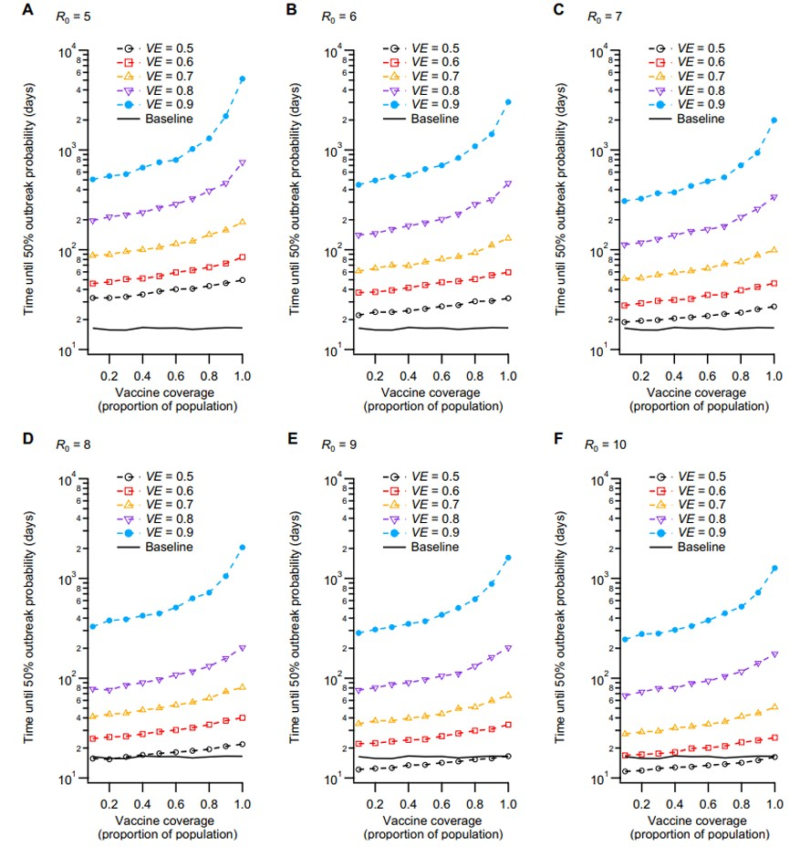

Overview
Picture someone arriving in Australia and found out that they carry a contagious virus. They enter hotel quarantine, undergo testing, and complete their isolation period. Everything seems under control.
But what happens if an infected person slips through the system?
During the COVID-19 pandemic, countries such as Australia and New Zealand relied on strict border quarantine to prevent imported infections from spreading into communities. Yet even a small number of quarantine breaches could trigger outbreaks.
This raises two important questions:
Can vaccination reduce the risk of infections escaping quarantine?
If a breach occurs, how much protection does a vaccinated community really have?
Researchers investigated these questions using computer simulations of quarantine and community transmission (Zachreson et al., 2022). Their findings reveal an important lesson: vaccinating people inside quarantine is not enough on its own. Protection across the wider community matters more.
How did researchers investigate this?
Studying rare quarantine failures in the real world is definitely not the easiest thing that comes to mind. Fortunately, computer simulations allow researchers to investigate scenarios without exposing communities to actual outbreaks.
Zachreson and colleagues developed a 2-stage simulation based on quarantine arrangements used in Australia and New Zealand.
Together, these two simulations allowed the researchers to explore not just whether infections could escape quarantine, but whether those escapes could lead to outbreaks in the wider community.
Their analysis explored three key factors:
- Virus transmissibility: How easily the virus spreads, represented by R0 (a higher R0 means an infected person can infect more people on average in a fully susceptible population).
- Vaccine efficacy against transmission: How effectively vaccination reduces infection and onward transmission.
- Vaccination coverage: The proportion of people in the community who are vaccinated.
By changing these factors, the researchers estimated how different vaccination scenarios might affect outbreak risk.
Why does a more contagious virus change everything?
Not all virus variants spread at the same rate.
The original COVID-19 virus was already challenging to suppress. The Delta variant made quarantine management more difficult because of its greater transmissibility.
As the virus becomes more contagious, vaccination needs to provide stronger protection to keep quarantine-related infection risk under control.
In the researchers’ simulations, vaccine efficacy of approximately 60% could be sufficient to offset the earlier baseline risk under some scenarios. For more transmissible variants, the required efficacy increased towards approximately 70-80%.
This means that a vaccine providing reasonable protection against a less contagious variant might be insufficient to maintain the same level of protection against a more contagious one.
However, preventing infections from escaping quarantine is only half the story.
What happens once an infection gets in contact with the wider community?
Why community vaccination matters
A quarantine breach does not become an outbreak right away. Whether the infection spreads depends partially on how protected the community is.
This was investigated by estimating how long it would take before there was a 50% probability of an outbreak involving at least 5 cases.
Figure 1 shows how that estimated time changes with vaccine efficacy and population vaccination coverage.

The overall trend is surprising.
When vaccine efficacy against transmission is low, increasing vaccination coverage provides relatively limited additional protection against outbreaks in these simulated scenarios.
However, when vaccines are highly effective, increasing vaccination coverage can dramatically delay outbreaks.
For instance, the study found that vaccines with approximately 80-90% efficacy, combined with widespread vaccination, could extend the modeled time to an outbreak by orders of magnitude under some conditions.
Hence, the relationship is not proportional. At high efficacy, increasing vaccination coverage can have a much larger effect than it does when efficacy is low.
This demonstrates why it is important to consider both vaccine efficacy and vaccination coverage, rather than either measure in isolation.
Comparing different protection scenarios
The patterns from the simulations can be summarised in Table 1.
| Scenario | What the simulations suggest |
|---|---|
| Lower vaccine efficacy (below 60%) | Even high vaccination coverage offers relatively limited improvement in the time until an outbreak. |
| Higher vaccine efficacy (80-90%) with low coverage | Strong individual vaccine protection does not provide the same population-wide benefit as high coverage. |
| Higher vaccine efficacy (80-90%) with high coverage | Outbreaks can be delayed, especially when coverage reaches high levels. |
| More transmissible virus | Stronger vaccine protection and higher coverage are needed to achieve similar outcomes. |
The table above reinforces the main point that effective vaccination and widespread coverage work together to reduce community outbreak risk.
It also highlights why public health decisions cannot rely on a single number, which is vaccination coverage in this case.
Limitations
Although simulations help researchers understand complex situations, they are not a time machine - they cannot predict exactly when an outbreak will occur.
The study implemented assumptions about quarantine procedures, virus characteristics, vaccination, and infection control. Real-world conditions can differ significantly.
For example, the researchers found that weaker infection-control measures within quarantine facilities could greatly increase the risk of infections escaping. This suggests that vaccination should complement effective quarantine procedures rather than replace them.
The findings were also developed around the COVID-19 variants and vaccination conditions studied at the time. They should not be interpreted as direct predictions for current variants.
What can we learn from this?
Now, you might be thinking: can vaccines stop a quarantine breach from becoming an outbreak?
They can greatly reduce the risk, but their effectiveness depends on both the protection they provide and how widely they are used.
The simulations show that higher virus transmissibility makes quarantine breaches more tricky to control. At the same time, vaccines that strongly reduce transmission, combined with high vaccination coverage, can significantly delay community outbreaks.
Protecting communities requires multiple layers of defense which include effective infection control, meticulous quarantine management, and population-level protection.
A strong border system may reduce the number of infections entering the community. But what happens after a breach also depends on how well the community is protected throughout.
References
Zachreson, C., Shearer, F. M., Price, D. J., Lydeamore, M. J., McVernon, J., McCaw, J., & Geard, N. (2022). COVID-19 in low-tolerance border quarantine systems: Impact of the Delta variant of SARS-CoV-2. Science Advances, 8(14), eabm3642. 2021.02.17.21251946 (2021)
L. M. Grout, A. Katar, D. A. Ouakrim, J. A. Summers, A. Kvalsvig, M. G. Baker, T. Blakely, N. Wilson, Estimating the failure risk of hotel-based quarantine for preventing COVID-19 outbreaks in Australia and New Zealand. medRxiv, 2021.02.17.21251946 (2021).